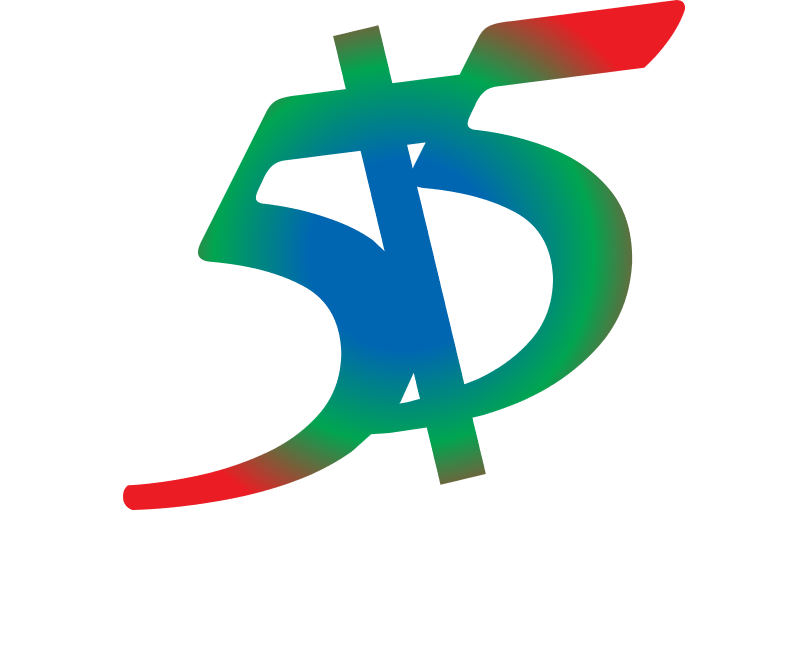

ABS-CBN has shut down its broadcast operations on 5 May 2020 at 11:45am UTC (7:45pm PHT).
The notice from NTC (National Telecommunications Commission) has drastically changed how Mass Media is being conducted in the Philippines. As one of the main pillars of democratic freedom, ABS-CBN has braced on its legacy of being In the Service of the Filipino against all odds -- including the scrutiny from the Duterte administration with the aid of Calida and Marcoleta.
As we enter the 3rd year since the shutdown, let us reflect on the struggles, achievements and legacies that the Kapamilya Network has for the better of the Filipino nation.
